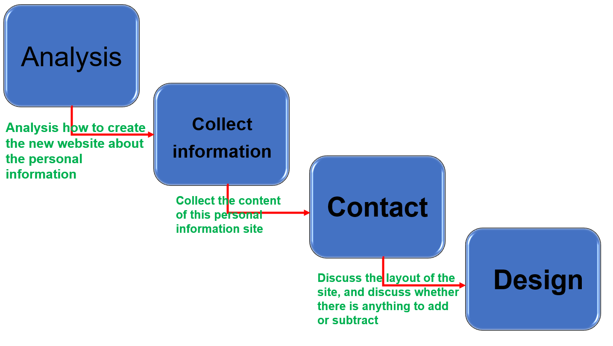
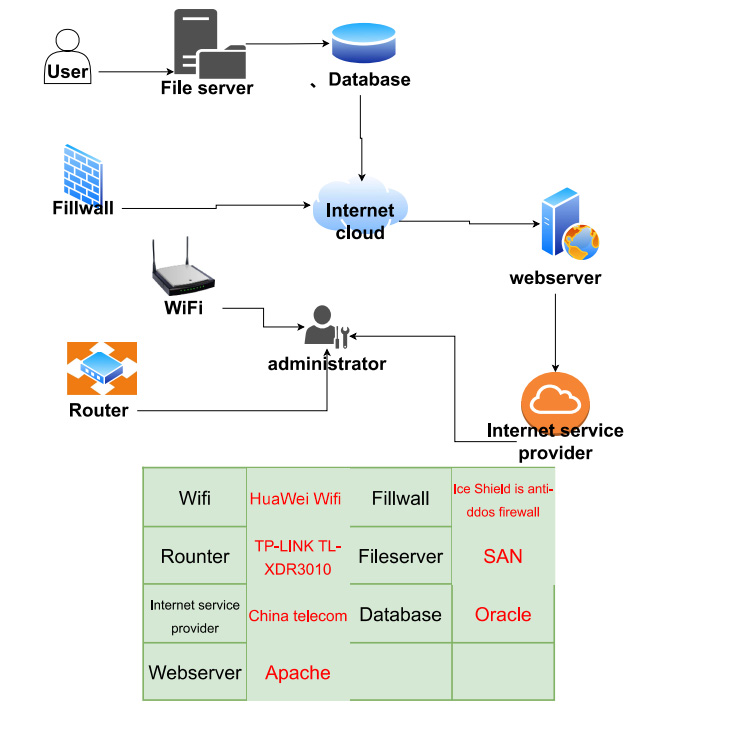

| Watermalen | jesse | |
|---|---|---|
| pingyin | Cheng weihao | Ye zhouyi |
| Name this system? | Resume website | Resume recording |
| What are the system objectives? | Provide resume | Provide resume |
| 3 essential system features and components? |
F1.Let others know yourself F2.Provide record of formal schooling F3.Provide educational background C1.database C2.Fillwall C3.internet cloud |
F1.Let others know yourself F2.Provide record of formal schooling F3.Provide educational background C1.database C2.Fillwall C3.internet cloud |
| 3 essential hardware from this system. |
1.TP-LINK TL-XDR3010 2.HuaWei Wifi 3.Ice Shield is anti-ddos firewall |
1.Ice Shield is anti-ddos firewall 2.TP-LINK TL-XDR3010 3.HuaWei Wifi |
| 3 essential software from this system. |
1.Apache 2.Ice Shield is anti-ddos firewall 3.China telecom |
1.Apache 2.Ice Shield is anti-ddos firewall 3.China telecom |
| 2 external system components. |
1.Public Cloud 2.Ice Shield is anti-ddos firewall |
1.Public Clou 2.Ice Shield is anti-ddos firewall |
| 2 system benefits |
1.clear process 2.Real-time update |
1.Make your resume readily available to employers 2.Share current information with family members |
| project difficulties: |
1.You need to keep updating it 2.Need to keep updating it |
1.Update will be slow 2.Updates will be wrong |